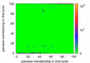
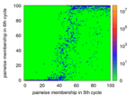
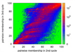

Haewoon Kwak, Yoonchan Choi, Young-Ho Eom, Hawoong Jeong, Sue Moon
Proceedings of the 9th ACM SIGCOMM conference on Internet measurement conference, Pages 301-314, 2009
ACM Portal
Abstract
Online social networks pose significant challenges to computer scientists, physicists, and sociologists alike, for their massive size, fast evolution, and uncharted potential for social computing. One particular problem that has interested us is community identification. Many algorithms based on various metrics have been proposed for identifying communities in networks [18, 24], but a few algorithms scale to very large networks. In recent, three community identification algorithms of CNM [16], Wakita [57], and Louvain [10] are prevalent due to their scalability to a few millions of nodes. Using a diverse set of network topologies, we exhibit that all three algorithms produce inconsistent communities every time the node ordering changes. We propose two quantitative metrics to represent the level of consistency across multiple runs of an algorithm: pairwise membership probability and consistency. Based on these two metrics, we solve the consistency problem without compromising the modularity. We demonstrate that our solution to use pairwise membership probabilities as link weights generates consistent communities within 6 or fewer cycles even in a network of tens of millions of nodes. We also examine identified communities in the AS graph. ASes in some communities are geographically close, even though the topological information bears no information about geographic locations. Also recursive application of our approach to a giant community has exposed varying degrees of strong ties between tier-1 ISPs and their customers. Our approach offers a new tool in the study of network structures and their evolutions.
Dataset
We use a diverse set of networks for evaluation in this work. These networks vary greatly in characteristics and in size from the smallest of 34 nodes to the largest of tens of millions. They in- clude off-line and online social networks, an online bulletin board system, a biological neural network, a protein interaction network, Internet Autonomous System (AS) graph, World-Wide Web graphs. A detailed list of public resources is like following:
- Zachary’s karate club [link]
- C. Elegans [link]
- Proten Interaction network [link]
- Oliveira’s AS Graph [link]
- Facebook [link]
- World-Wide Web [link]
- Wikipedia [link]
- YouTube [link]
- Flickr [link]
- Orkut [link]
Code
- CNM algorithm [link]
- Wakita algorithm [link]
- Louvain algorithm [link]
- Our solution
- Shuffling edges [unweigted] [weighted]
- Calculating pairwise membership probability [link]
- Calculating consistency [link]
Experiments
If you want to see larger images, just click.
Change of Pairwise Membership Probability
Zachary's karate club
{kind=link}
{kind=link}
{kind=link}
{kind=link}
{kind=link}
C.Elegans
{kind=link}
{kind=link}
{kind=link}
{kind=link}
{kind=link}
Protein interaction graph
{kind=link}
{kind=link}
{kind=link}
{kind=link}
{kind=link}
Oliveira's AS Graph
{kind=link}
{kind=link}
{kind=link}
{kind=link}
{kind=link}
{kind=link}
{kind=link}
{kind=link}
{kind=link}
{kind=link}
World Wide Web
{kind=link}

{kind=link}
{kind=link}
{kind=link}
Wikipedia
{kind=link}
{kind=link}
{kind=link}
{kind=link}
{kind=link}
YouTube
{kind=link}
{kind=link}
{kind=link}
{kind=link}
{kind=link}
Flickr
{kind=link}
{kind=link}
{kind=link}
{kind=link}
{kind=link}
{kind=link}
Orkut
{kind=link}
{kind=link}
{kind=link}
{kind=link}
{kind=link}
{kind=link}
{kind=link}
{kind=link}

Cyworld
{kind=link}
{kind=link}
{kind=link}
{kind=link}
{kind=link}
{kind=link}
{kind=link}
{kind=link}
A Case Study of AS Community
AS Topology: A Bird's Eye View
We find 48 communities in the AS graph released by Oliveira.
We visualize all communities in the below figure by mapping an AS into a node, and a relationship between AS into an edge.
Each color represents a different community.
The community of sky blue in the left-side is the largest community.
Click on the image for a large version (5904x3888).
{kind=link}
The largest community in the L community
Visualization of the
largest community in the L community. The red circles
are MCI Communications Services (ASN=701), AT&T
WorldNet Services (ASN = 7018), and Sprint (ASN =
1239). The color of a node changes from red to blue as
the degree decreases. The size of a node is proportional
to the degree in log-scale.
{kind=link}
Geographically contcentrated community
@Korea
Visualization of the
community including Korea telecom AS (ASN=4766).
The red circles are of Korea Telecom (ASN = 4766), Dacom
(ASN = 3786), and Hanaro (ASN = 9318). They are
major ISPs in Korea.
{kind=link}
@HongKong
This figure is omitted in the paper.
Visualization of the community including HongKong IXPs, Reach Network Border AS
(ASN=4637), Hong Kong Internet Exchange--Route Server (ASN=4635). This
community also includes most of Hong Kong ISPs listed in Hong Kong Internet
Service Provider Assocation.
{kind=link}
Star-shaped community
Visualization of
the star-community whose hub is Profit-Center LLC
(ASN=12383) at Kiev, Ukraine. All ASes but the hub
have only one link to the hub. That is, they are stub ASes.
In addition, all relations between the hub and the stub
are provider-customer.
{kind=link}
We visualize network graphs via NetworkX, igraph, and Gephi (for HK)
Communities in AS graph
- ASes are divided by communities.
- Format: AS Number \t AS Type \t Degree from AS relations \t AS Name (Description)
- link
Bibtex
@inproceedings{1644930,
author = {Kwak, Haewoon and Choi, Yoonchan and Eom, Young-Ho and Jeong, Hawoong and Moon, Sue},
title = {Mining communities in networks: a solution for consistency and its evaluation},
booktitle = {IMC '09: Proceedings of the 9th ACM SIGCOMM conference on Internet measurement conference},
year = {2009},
isbn = {978-1-60558-771-4},
pages = {301--314},
location = {Chicago, Illinois, USA},
doi = {http://doi.acm.org/10.1145/1644893.1644930},
publisher = {ACM},
address = {New York, NY, USA},
}
Contact
Haewoon Kwak (haewoon AT an.kaist.ac.kr)